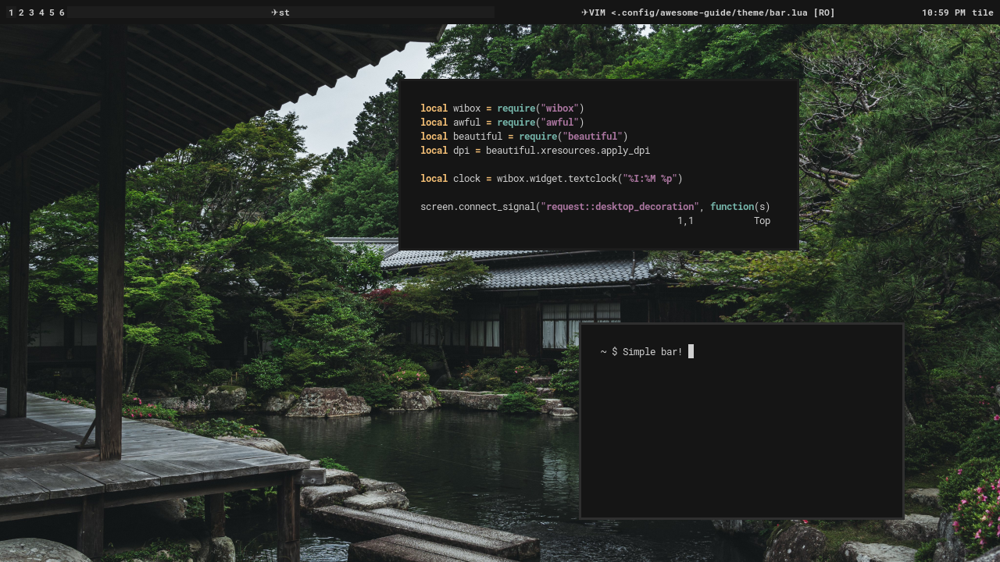

Welcome back! This is part two of this series on configuring AwesomeWM. The goal of this post is to do some basic theming with our new desktop. As always, the configurations are hosted on this repository. The branch for this post is called "theming".
Let's start off with creating a new directory for our theme. I'll create this directory at ~/.config/awesome/theme/. However, this doesn't mean anything to AwesomeWM right now -- we need to create a file called init.lua and load it in our rc.lua like so:
-- ~/.config/awesome/rc.lua
-- Load libraries
local awful = require("awful")
local naughty = require("naughty")
require("awful.autofocus")
--[[
Error handling:
This will run if an error is encountered and
send a notification specifying what happened.
It's best to put this at the start of the file.
--]]
naughty.connect_signal("request::display_error", function(message, startup)
naughty.notification {
urgency = "critical",
title = "An error occured" .. (startup and " during startup." or "."),
message = message
}
end)
-- Set variables
terminal = "st"
modkey = "Mod4"
-- Load files
require("bind")
require("rule")
require("theme") -- This loads our new directory
...
As said in the previous post, here AwesomeWM looks for a file called theme.lua or a file called init.lua in a directory called theme. Because only the latter exists, it loads that (don't have both, or it won't work!)
So we have our directory and our init file, now what? The init file actually isn't very important here -- it will just come in handy later as we create multiple files in the directory, all of which we can load in this file. So let's create our first file to load!
Before we do that, though, we need to talk about a new library. beautiful is AwesomeWM's library for theming, and if we want to change anything related to that we need to use a function called beautiful.init. This will initialize beautiful with a theme file and let the files loaded after it use its theming. As such, we'll call this file theme.lua. Here it is with some basic configuration:
-- ~/.config/awesome/theme/theme.lua
local gears = require("gears")
local dpi = require("beautiful").xresources.apply_dpi
local theme = {}
theme.font = "RobotoMono Bold 11"
theme.bg_normal = "#151515"
theme.bg_focus = "#1d1d1d"
theme.bg_urgent = "#ac4142"
theme.fg_normal = "#d0d0d0"
theme.fg_focus = "#d0d0d0"
theme.fg_urgent = "#ac4142"
theme.useless_gap = dpi(8)
theme.border_width = dpi(4)
theme.border_color_normal = "#1d1d1d"
theme.border_color_active = "#2f2f2f"
theme.border_color_marked = "#1d1d1d"
theme.tooltip_opacity = 0
theme.wallpaper = gears.filesystem.get_configuration_dir() .. "theme/wallpaper.jpg"
gears.wallpaper.maximized(theme.wallpaper)
return theme
Let's talk about the first new bit in this file: the dpi function. It's good practice to use dpi measurements rather than pixel measurements so that your config works on every dpi and screen size.
Next we create a table called theme. We will return this table at the end of the file, which will then pass it to the beautiful.init function and apply our theme. As such, we change our theme variables in the theme table. First we set our font, then variables for colors, then gaps, border thicknesses, and border colors. Setting the tooltip opacity to 0 effectively disables tooltips.
Lastly, we set the wallpaper -- this does not need to be in this file, but I like to put it with the rest of the theme. First, though, I set a variable for the path to the wallpaper for clarity. In this post I have chosen to use the gears.wallpaper.maximized function instead of awful.wallpaper, despite the former being deprecated. This is because awful.wallpaper currently has some issues with setting wallpapers which fill the screen while preserving their aspect ratio. However, this function should make awful.wallpaper work as intended in its current state:
screen.connect_signal("request::wallpaper", function(s)
awful.wallpaper {
screen = s,
widget = {
image = crop_surface {
surface = load_uncached(theme.wallpaper),
ratio = s.geometry.width/s.geometry.height
},
widget = wibox.widget.imagebox
}
}
end)

Here's what the desktop looks like so far! Already pretty good, no? However, we're missing a bar, which is pretty much mandatory for a usable desktop. So let's start by creating a new file at ~/.config/awesome/theme/bar.lua and loading it in ~/.config/awesome/theme/init.lua as such:
-- ~/.config/awesome/theme/init.lua
local beautiful = require("beautiful")
local gears = require("gears")
beautiful.init(gears.filesystem.get_configuration_dir() .. "theme/theme.lua")
require("theme.bar") -- This loads our new file
Before writing our bar, though, we need to look at a new library called wibox. This is AwesomeWM's widget library, containing all functions used to create widgets, bars, and everything alike. Let's see how it works in the context of our bar:
-- ~/.config/awesome/theme/bar.lua
local wibox = require("wibox")
local awful = require("awful")
local beautiful = require("beautiful")
local dpi = beautiful.xresources.apply_dpi
local clock = wibox.widget.textclock("%I:%M %p")
screen.connect_signal("request::desktop_decoration", function(s)
--[[
Taglist:
This widget shows all of AwesomeWM's tags.
Think of them like workspaces. You can
click on one to switch to that tag.
--]]
s.taglist = awful.widget.taglist {
screen = s,
filter = awful.widget.taglist.filter.all,
buttons = {
awful.button({ }, 1, function(t)
t:view_only()
end)
}
}
--[[
Tasklist:
This widget displays all active windows. Left
click on a window's name to toggle minimization.
--]]
s.tasklist = awful.widget.tasklist {
screen = s,
filter = awful.widget.tasklist.filter.currenttags,
widget_template = {
{
{
id = "text_role",
forced_height = dpi(20),
widget = wibox.widget.textbox
},
valign = "center",
halign = "center",
widget = wibox.container.place
},
id = "background_role",
widget = wibox.container.background
},
buttons = {
awful.button({ }, 1, function (c)
c:activate { context = "tasklist", action = "toggle_minimization" }
end)
}
}
--[[
Layouts:
This widget shows the active layout. Left
click to go to the next layout and right
click to go to the previous layout.
--]]
s.layouts = awful.widget.layoutbox {
screen = s,
buttons = {
awful.button({ }, 1, function () awful.layout.inc( 1) end),
awful.button({ }, 3, function () awful.layout.inc(-1) end),
}
}
--[[
Wibar:
This is where we create our bar.
--]]
s.wibar = awful.wibar {
screen = s,
position = "top",
height = dpi(40),
bg = beautiful.bg_normal,
fg = beautiful.fg_normal,
widget = {
{
s.taglist,
s.tasklist,
{
clock,
s.layouts,
spacing = dpi(10),
layout = wibox.layout.fixed.horizontal
},
layout = wibox.layout.align.horizontal
},
margins = dpi(10),
widget = wibox.container.margin
}
}
end)
There's a lot going on here, so let's go through it step by step.
First we create a clock widget. This is a very simple widget, just displaying the time. More information can be found in the docs.
Next we have a function that everything else in the file is wrapped in. This runs the functions inside it for each connected screen, ensuring that the bar is put on each screen.
After that we have our first big widget: the taglist widget. In this widget we specify the screen for the tags it's displaying, then the filter of which tags are shown. Here we tell the function to show all tags for the screen, including the ones which are empty or not visible. Then, lastly, we specify the actions made when the widget is clicked. In this case, when a tag is left-clicked it will only show that tag.
Next up is the tasklist widget. Just like the last function, we first specify the screen and set a filter for the tasks shown. This filter will show all tasks in the current tag. Nextis something most people do, but isn't needed -- changing the template that the function uses to display tasks. This is somewhat complicated for what we're currently talking about and not the most important, so I'll skip it for now. Then, finally, we specify the actions for when the widget is clicked. Now when a task is clicked, it will toggle minimization for that task.
Then we have another pretty simple widget. This widget will show the current layout and allow us to change it. We specify the screen for it, then tell it to cycle to the next layout when it is left-clicked, and cycle backwards when it is right-clicked.
And finally, we have the bar itself. We specify the screen it is on, that it will be on the top of the screen, 40 units tall, and set the background and foreground colors. Then we have the widget itself. This is the format of all widgets made with wibox, which are comprised of many simple, nested widgets. At the bottom we have a margin widget, that gives the widgets 10 units of margin around the edges. Then we have three widgets set to align horizontally. The first widget is our taglist, and the second is our tasklist. However, the third widget is another nested widget that contains our clock and layout widgets. These are horizontally fixed, with 10 units of spacing between each other.
That's all for our bar! It can seem like a lot at first, but as you learn more about AwesomeWM it will soon seem incredibly simple :)
Here's what it looks like! Pretty nice, but we can make it look a bit better with some new variables in our theme.lua.
-- ~/.config/awesome/theme/theme.lua
...
theme.tasklist_bg_focus = "#151515"
theme.tasklist_bg_urgent = "#151515"
theme.tasklist_fg_normal = "#d0d0d0" .. "25"
theme.tasklist_fg_focus = "#d0d0d0"
theme.tasklist_fg_urgent = "#ac4142"
theme.tasklist_fg_minimize = "#d0d0d0" .. "25"
theme.tasklist_font_minimized = "RobotoMono Italic Bold 11"
theme.tasklist_plain_task_name = true
theme.taglist_bg_focus = "#151515"
theme.taglist_bg_urgent = "#151515"
theme.taglist_fg_focus = "#d0d0d0"
theme.taglist_fg_urgent = "#ac4142"
theme.taglist_fg_empty = "#d0d0d0" .. "25"
theme.taglist_fg_occupied = "#d0d0d0" .. "75"
...
The only notable things here are a new variable for the tasklist and concatonation of variables. The new tasklist variable is theme.tasklist_plain_task_name, which removes special icons from the start of task names. Then we have the concatonation. Lua adds two strings together with .., and here we're adding two more characters onto our hex codes which specify the opacity of the color. This effectively dims these colors.
And there we have it! A simple, aesthetically appealing desktop. Join me next time for some basic widgets which add more functionality to our desktop.